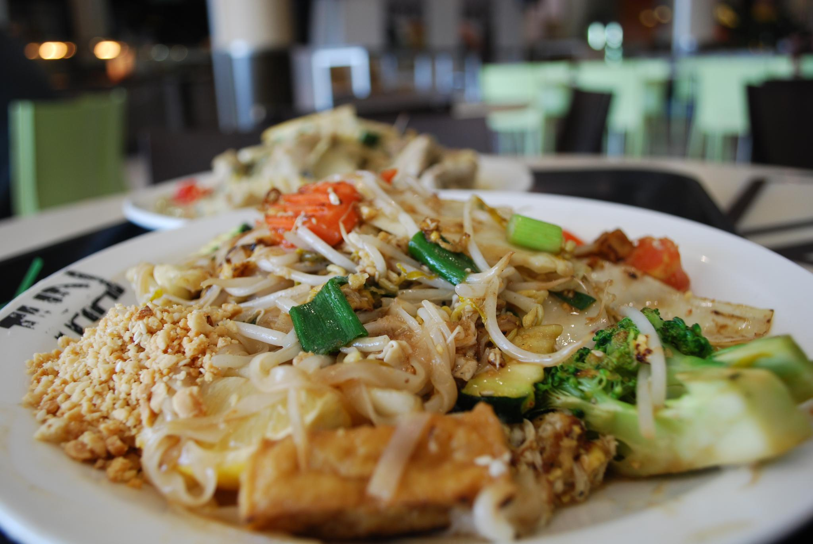

Home
Pad Thai

Description
Thailand's most iconic street dish — rice noodles wok-fried with egg, shrimp, and tamarind sauce, finished with fresh herbs and a squeeze of lime.
Ingredients
- 7.1 ounces dried narrow rice noodles
- 7.1 ounces shrimp, peeled and deveined
- 2 pieces eggs
- 3.6 ounces firm tofu, cubed and pan-fried
- 3.6 ounces bean sprouts
- 1.1 ounces garlic chives or green onions
- 3 tablespoons tamarind paste
- 2 tablespoons fish sauce
- 1 tablespoons palm sugar or brown sugar
- 3 tablespoons neutral oil
- 2 pieces shallots, minced
- 3 tablespoons roasted peanuts, crushed
- 1 pieces lime, cut into wedges
- 1 teaspoons dried chili flakes
Steps
-
Soak the noodles: Submerge 7.1 ounces dried narrow rice noodles in room-temperature water for 30 minutes until pliable but still firm to the bite. Drain and set aside.
-
Mix the sauce: Combine 3 tablespoons tamarind paste, 2 tablespoons fish sauce, and 1 tablespoons palm sugar or brown sugar in a bowl. Stir until sugar dissolves. Taste — it should be tangy, savory, and lightly sweet.
-
Fry aromatics and shrimp: Heat 3 tablespoons neutral oil in a wok over high heat. Fry 2 pieces shallots, minced for 2m 30s, then add 7.1 ounces shrimp, peeled and deveined and 3.6 ounces firm tofu, cubed and pan-fried. Cook 2 minutes until shrimp are just pink.
-
Add noodles and sauce: Add drained noodles to the wok and pour the sauce over. Toss and stir-fry 2 minutes until noodles absorb the sauce and begin to caramelize.
-
Scramble the eggs: Push noodles to one side. Crack 2 pieces eggs into the empty space and scramble until just set, then fold into the noodles.
-
Finish and plate: Toss in 3.6 ounces bean sprouts and 1.1 ounces garlic chives or green onions, cooking 30 seconds — sprouts should stay crunchy. Plate and top with 3 tablespoons roasted peanuts, crushed and 1 teaspoons dried chili flakes. Serve with 1 pieces lime, cut into wedges on the side.